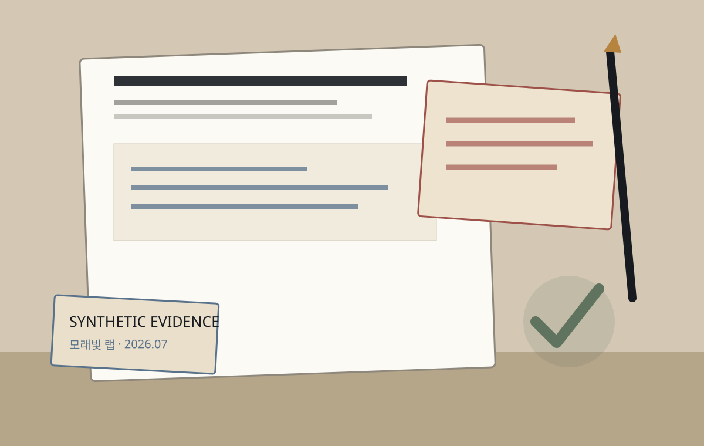
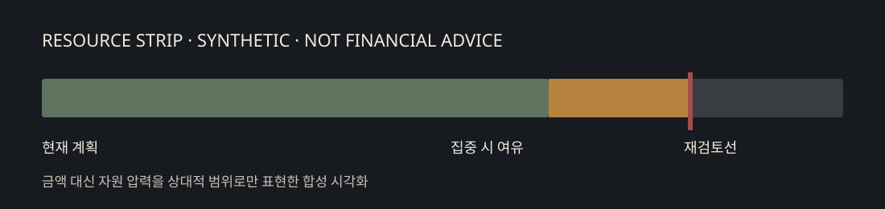

PRIVATE WEEKLY CORRESPONDENCE
2026 · 31주차
모든 회사·수치·인용은 합성
모래빛 랩 / Sandlight Lab
지금 확장할 것과
멈출 것
대표님, 이번 주의 질문은 “늘어난 기업 문의를 따라가되 소비자 제품의 학습 기회를 얼마나 남길 것인가”입니다. 현재 태도는 전면 확장이 아니라 4주간의 선택적 집중입니다.
중심 전략 질문
기업 파일럿에 자원을 집중하면서도, 되돌릴 수 있는 소비자 학습 경로를 남길 수 있는가?
현재 권고 태도
기업 파일럿 두 건만 깊게 검증하고, 소비자 기능 확장은 멈추되 핵심 사용 신호 수집은 유지합니다.
- 내부 · 2일 전
- 기업 pilot 문의 3건 → 8건
- 내부 · 1일 전
- 소비자 지원시간 +38%
- 외부 · 5일 전
- 공공 조달 일정은 아직 불확실

